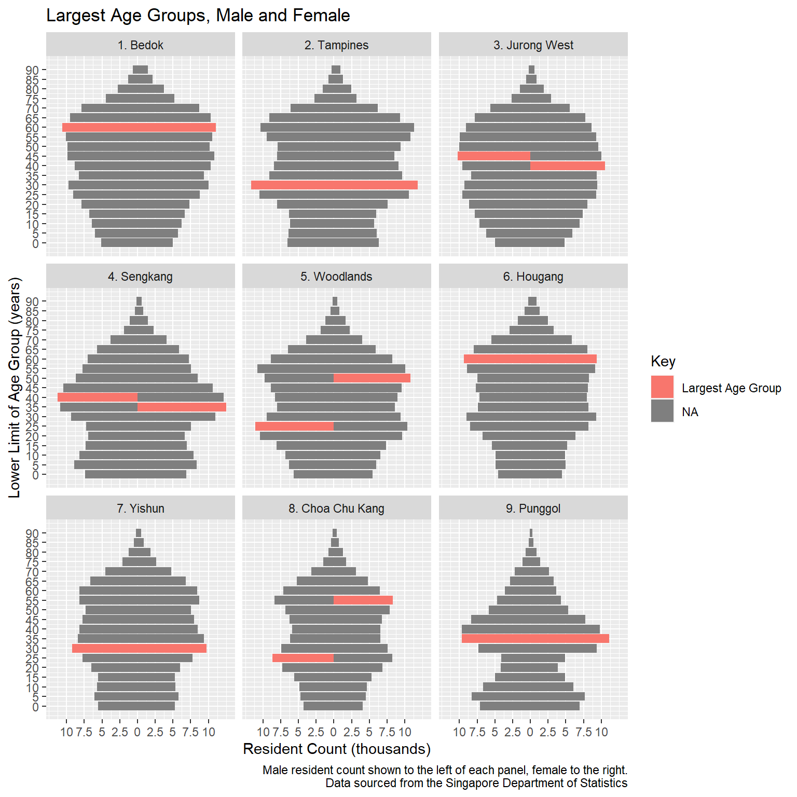
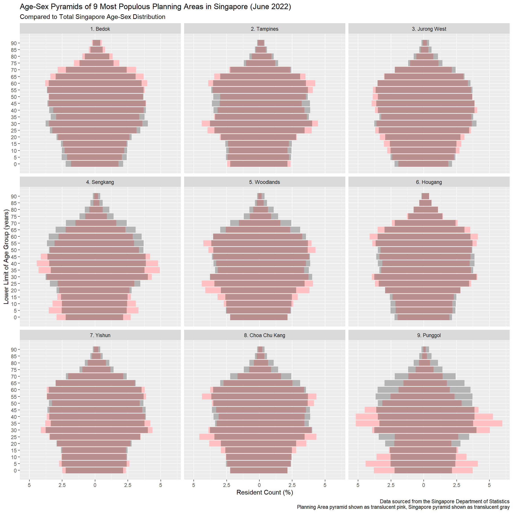

pacman::p_load(tidyverse)
pop_data <- read_csv("data/respopagesextod2022.csv")Take-home Exercise 2
Data Viz Critique
For this exercise, we have been tasked to critique a data visualisation that has been prepared by one of our peers for Take-Home Exercise 1. We are also to suggest ways it can be improved and show how they can be done.
Clarity
The title of the Tableau Public page where the data viz above was published, was “Singapore Population Distribution by Age”. Unfortunately, it does not provide any indication of the relevant timeframe, or the source of the data. Their absence reduces the usability and credibility of the viz. Further, it is unclear why the nine specific planning areas were chosen, and thus may be misinterpreted to mean that the nine areas comprise all of Singapore’s population. This would be incorrect.
A key issue with the chart itself is that values on its y-axis decrease as we move further away from the origin. Although age groups are essentially categorical, it can be confusing for the reader since we are mostly trained to understand that values increase the further away they are from the origin. This may lead to misinterpretation, for example that the youngest age groups are also the smallest.
That aside, the viz does give an adequate overall view of how the distribution of age and gender in each planning area compares with the others. The pyramid shapes (once inverted with a correction of the y-axis) can tell a story of an aging population that seems relatively gender-balanced. However, we can explore other ways of visualising the data that might uncover other information.
Aesthetics
The mark labels on the y-axis are quite cluttered and not easy to read. The bars in each chart appear to vary in intensity, possibly increasing in intensity proportionate to the age group’s population point. This is somewhat redundant since the relative lengths of bars do a much better job visually of conveying magnitude. Unfortunately the varying intensities of colours as a whole does not give a pleasing aesthetic. That said, overall the viz looks clean in that there aren’t many unnecessary elements that might make it difficult to read.
Alternative Design
Here I will explain how the data viz above might be improved.
Launch Tidyverse and Import Data
We will only be using Tidyverse.
Preparing the Data
As mentioned previously, it was not clear from the data viz why the nine planning areas shown were selected. However, when we examine the data, we find that they correspond with the top nine planning areas in terms of total resident count, as shown below:
pop_data %>%
group_by(PA) %>%
summarise_at(vars(Pop),
list(Total_Residents = sum)) %>%
arrange(desc(Total_Residents)) # A tibble: 55 × 2
PA Total_Residents
<chr> <dbl>
1 Bedok 278640
2 Tampines 265690
3 Jurong West 258540
4 Sengkang 253120
5 Woodlands 252510
6 Hougang 227540
7 Yishun 222960
8 Choa Chu Kang 190330
9 Punggol 186270
10 Bukit Batok 165160
# … with 45 more rowsWe therefore create a subset of the original dataset with only the nine planning areas we need. We can also take the opportunity here to make changes to the dataset that will increase clarity, namely by ensuring that the planning areas are displayed in descending order of resident count. To do this, we can insert the order number before each planning area name, using mutate() and replace().
top_nine <- pop_data %>%
filter(PA %in% c('Bedok', 'Tampines', 'Jurong West',
'Sengkang', 'Woodlands', 'Hougang',
'Yishun', 'Choa Chu Kang', 'Punggol')) %>%
mutate(PA = replace(PA, PA == "Bedok", "1. Bedok")) %>%
mutate(PA = replace(PA, PA == "Tampines", "2. Tampines")) %>%
mutate(PA = replace(PA, PA == "Jurong West", "3. Jurong West")) %>%
mutate(PA = replace(PA, PA == "Sengkang", "4. Sengkang")) %>%
mutate(PA = replace(PA, PA == "Woodlands", "5. Woodlands")) %>%
mutate(PA = replace(PA, PA == "Hougang", "6. Hougang")) %>%
mutate(PA = replace(PA, PA == "Yishun", "7. Yishun")) %>%
mutate(PA = replace(PA, PA == "Choa Chu Kang", "8. Choa Chu Kang")) %>%
mutate(PA = replace(PA, PA == "Punggol", "9. Punggol")) We then select only the columns we want, and group the data so that we have a sub-total count of residents for each age group for each gender.
final_data <- top_nine %>%
select(PA, AG, Sex, Pop) %>%
group_by(PA, AG, Sex) %>%
summarise_at(vars(Pop), list(Count = sum))To make the y-axis (i.e. age groups) less cluttered and therefore more readable, we can indicate only the lower limit of each group. We can also convert the values to numeric form, to ensure that the values on the y-axis will increase as they move further away from the origin, thus increasing clarity.
final_data <- final_data %>%
mutate(AG = replace(AG, AG == "0_to_4", 0)) %>%
mutate(AG = replace(AG, AG == "5_to_9", 5)) %>%
mutate(AG = replace(AG, AG == "10_to_14", 10)) %>%
mutate(AG = replace(AG, AG == "15_to_19", 15)) %>%
mutate(AG = replace(AG, AG == "20_to_24", 20)) %>%
mutate(AG = replace(AG, AG == "25_to_29", 25)) %>%
mutate(AG = replace(AG, AG == "30_to_34", 30)) %>%
mutate(AG = replace(AG, AG == "35_to_39", 35)) %>%
mutate(AG = replace(AG, AG == "40_to_44", 40)) %>%
mutate(AG = replace(AG, AG == "45_to_49", 45)) %>%
mutate(AG = replace(AG, AG == "50_to_54", 50)) %>%
mutate(AG = replace(AG, AG == "55_to_59", 55)) %>%
mutate(AG = replace(AG, AG == "60_to_64", 60)) %>%
mutate(AG = replace(AG, AG == "65_to_69", 65)) %>%
mutate(AG = replace(AG, AG == "70_to_74", 70)) %>%
mutate(AG = replace(AG, AG == "75_to_79", 75)) %>%
mutate(AG = replace(AG, AG == "80_to_84", 80)) %>%
mutate(AG = replace(AG, AG == "85_to_89", 85)) %>%
mutate(AG = replace(AG, AG == "90_and_over", 90)) %>%
mutate_at(c('AG'), as.numeric)To reverse the bars for the male counts, we create another column which has the female count as a positive number and the male count as a negative number.
final_data <- final_data %>%
group_by(Sex) %>%
mutate(Population = ifelse(Sex == "Females", Count,-Count))Then we plot the age-sex pyramids for each planning area, in a trellis display. In doing so, we also add a title which explains the selection of the nine planning areas and the timeframe, as well as a caption mentioning the data’s source. As the default colour options are clear and aesthetically pleasing, we don’t need to further change them.
plotted <- ggplot(final_data, aes(x = AG, Population, fill = Sex)) +
geom_bar(data = filter(final_data, Sex == "Females"), stat = "identity") +
geom_bar(data = filter(final_data, Sex == "Males"), stat = "identity") +
scale_y_continuous(breaks = seq(-10000, 10000, 2500),
labels = abs(seq(-10, 10, 2.5))) +
scale_x_continuous(breaks = seq(0, 90, 5)) +
coord_flip() +
facet_wrap(~ PA) +
labs(x = "Lower Limit of Age Group (years)", y = "Resident Count (thousands)",
title = "Age-Sex Pyramids of 9 Most Populous Planning Areas in Singapore (June 2022)",
caption = "Data sourced from the Singapore Department of Statistics")
plottedWhile the above chart provides a good overview of the relative shapes of the age-sex pyramids, we might be interested to know which age group is the largest for each gender in each planning area.
To do this, first we create a new column in the dataset, called “Key”. The value in this column would be the count if the row corresponds with the largest age group for a gender in a planning area. If it is not the largest age group, then the value is simply a character space (i.e. a blank).
final_data2 <- final_data %>%
group_by(PA, Sex) %>%
mutate(Key = ifelse((max(Count) == Count), Count/1000, " "))Then we can label the largest age groups using geom_text(). We also add a caption to explain what each label means.
plotted2 <- ggplot(final_data2, aes(x = AG, Population, fill = Sex)) +
geom_bar(data = filter(final_data2, Sex == "Females"), stat = "identity") +
geom_bar(data = filter(final_data2, Sex == "Males"), stat = "identity") +
geom_text(aes(label=Key)) +
scale_y_continuous(breaks = seq(-10000, 10000, 2500),
labels = abs(seq(-10, 10, 2.5))) +
scale_x_continuous(breaks = seq(0, 90, 5)) +
coord_flip() +
facet_wrap(~ PA) +
labs(x = "Lower Limit of Age Group (years)", y = "Resident Count (thousands)",
title = "Age-Sex Pyramids of 9 Most Populous Planning Areas in Singapore (June 2022)",
caption = "Largest age groups for each gender in each planning area, are indicated with their count.\n Data sourced from the Singapore Department of Statistics")
plotted2While this makes it easier to see the values corresponding to each of the largest age groups, perhaps our main interest is to convey anomalies and we are less interested in the detailed values. Instead of labelling the largest age groups with their count values, perhaps we can highlight the corresponding bars instead.
To do this, we need to create a new column, similar to what we did before. The difference here is that we then apply it to the chart’s aesthetic fill (i.e. the colours of the bars).
final_data3 <- final_data %>%
group_by(PA, Sex) %>%
mutate(Key = ifelse((max(Count) == Count), "Largest Age Group", NA))
plotted3 <- ggplot(final_data3, aes(x = AG, Population, fill = Key)) +
geom_bar(data = filter(final_data3, Sex == "Females"), stat = "identity") +
geom_bar(data = filter(final_data3, Sex == "Males"), stat = "identity") +
scale_y_continuous(breaks = seq(-10000, 10000, 2500),
labels = abs(seq(-10, 10, 2.5))) +
scale_x_continuous(breaks = seq(0, 90, 5)) +
coord_flip() +
facet_wrap(~ PA) +
labs(x = "Lower Limit of Age Group (years)", y = "Resident Count (thousands)",
title = "Largest Age Groups, Male and Female",
caption = "Male resident count shown to the left of each panel, female to the right.\n Data sourced from the Singapore Department of Statistics")
plotted3
We see from the above a more visually striking contrast between the two planning areas that have a large difference between the largest age groups for the two genders, and the others. However, I was only able to explain that the male resident count is too the left of each panel, and female to the right. I am sure there is a more elegant way that I haven’t figured out yet!
Conclusion
While there are many ways to change the appearance and content, they should be determined by the message(s) we plan to convey with the data viz. The above are merely some suggestions to improve clarity and aesthetics without adding too much content, and in the absence of the original owner’s intentions. This exercise has also helped me realise the improvements I could have made with my own data viz for Take-home Exercise 1.
Extra
The following was added after the deadline for this exercise. We were asked in class to consider displaying the pyramids in a manner that would allow direct contrast with the age-sex pyramid shape for the total population of Singapore. Here goes.
Top_Nine <- top_nine %>%
group_by(PA, AG, Sex) %>%
summarise(Count = sum(Pop)) %>%
group_by(PA) %>%
mutate(percentofPA = (Count/sum(Count))*100) %>%
select(PA, AG, Sex, percentofPA)Singapore <- pop_data %>%
group_by(AG, Sex) %>%
summarise(Count = sum(Pop)) %>%
ungroup(AG, Sex) %>%
mutate(percentofSG = (Count/sum(Count))*100)Final <- left_join(Top_Nine, Singapore, by = c('AG'='AG', 'Sex'='Sex'))Final1 <- Final %>%
mutate(AG = replace(AG, AG == "0_to_4", 0)) %>%
mutate(AG = replace(AG, AG == "5_to_9", 5)) %>%
mutate(AG = replace(AG, AG == "10_to_14", 10)) %>%
mutate(AG = replace(AG, AG == "15_to_19", 15)) %>%
mutate(AG = replace(AG, AG == "20_to_24", 20)) %>%
mutate(AG = replace(AG, AG == "25_to_29", 25)) %>%
mutate(AG = replace(AG, AG == "30_to_34", 30)) %>%
mutate(AG = replace(AG, AG == "35_to_39", 35)) %>%
mutate(AG = replace(AG, AG == "40_to_44", 40)) %>%
mutate(AG = replace(AG, AG == "45_to_49", 45)) %>%
mutate(AG = replace(AG, AG == "50_to_54", 50)) %>%
mutate(AG = replace(AG, AG == "55_to_59", 55)) %>%
mutate(AG = replace(AG, AG == "60_to_64", 60)) %>%
mutate(AG = replace(AG, AG == "65_to_69", 65)) %>%
mutate(AG = replace(AG, AG == "70_to_74", 70)) %>%
mutate(AG = replace(AG, AG == "75_to_79", 75)) %>%
mutate(AG = replace(AG, AG == "80_to_84", 80)) %>%
mutate(AG = replace(AG, AG == "85_to_89", 85)) %>%
mutate(AG = replace(AG, AG == "90_and_over", 90)) %>%
mutate_at(c('AG'), as.numeric)Final6 <- Final1 %>%
select(PA, AG, Sex, percentofPA, percentofSG) %>%
mutate(Category = "A") %>%
mutate(PerCent = ifelse(percentofPA<=percentofSG, (percentofSG - percentofPA), 0)) %>%
group_by(PA, AG, Sex, percentofPA, percentofSG) %>%
group_modify(~ add_row(., Category = "B")) %>%
group_modify(~ add_row(., Category = "C")) %>%
group_modify(~ add_row(., Category = "D")) %>%
mutate(PerCent = ifelse(Category == "B" & percentofPA>percentofSG, (percentofPA - percentofSG), PerCent)) %>%
mutate(PerCent = ifelse(Category == "C" & percentofSG<percentofPA, percentofSG, PerCent)) %>%
mutate(PerCent = ifelse(Category == "D" & percentofSG>=percentofPA, percentofPA, PerCent)) %>%
replace(is.na(.), 0) %>%
mutate(PerCent = ifelse(Sex == "Females", PerCent,-PerCent))plotted2 <- ggplot(Final6, aes(x = AG, PerCent, fill = Sex)) +
geom_bar(data = filter(Final6, Sex == "Females"), stat = "identity", aes(fill = Category)) +
geom_bar(data = filter(Final6, Sex == "Males"), stat = "identity", aes(fill = Category)) +
scale_fill_manual(values = c('gray70', 'rosybrown1', 'rosybrown', 'rosybrown')) +
coord_flip() +
scale_y_continuous(breaks = seq(-5, 5, 2.5),
labels = abs(seq(-5, 5, 2.5))) +
scale_x_continuous(breaks = seq(0, 90, 5)) +
facet_wrap(~ PA) +
theme(legend.position="none") +
labs(x = "Lower Limit of Age Group (years)", y = "Resident Count (%)",
title = "Age-Sex Pyramids of 9 Most Populous Planning Areas in Singapore (June 2022)",
subtitle = "Compared to Total Singapore Age-Sex Distribution",
caption = "Data sourced from the Singapore Department of Statistics\n Planning Area pyramid shown as translucent pink, Singapore pyramid shown as translucent gray")
plotted2